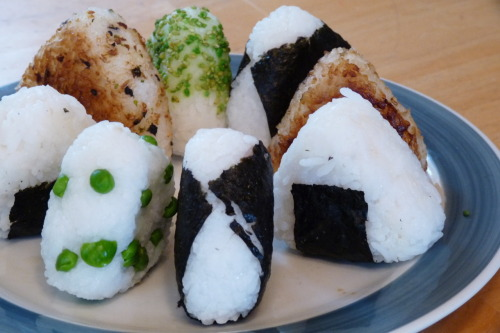

Onigiri Recipe

Description
Onigiri is a Japanese food made from white rice formed into triangular
or cylindrical shapes and often wrapped in nori. Onigiri can be made with
different toppings such as spam, tuna, or peas.
Ingredients
- Cooked rice
- Salt
- Optional
- Nori
- Furikake
- Peas
- Soy Sauce
Steps
-
Once the rice is cooked and cooled down, all you have to do is
shape them. I have a difficult time with this, so what I’ve learned
to do is use some plastic wrap. Put a scoop of rice in the middle of
the plastic wrap and wrap it up. Onigiri Variation #1:
If you want to make pea onigiri, like in the picture above, or you want
to mix in some furikake, you need to do this before you put the rice in
the plastic wrap. Just take your scoop of rice, put it in a bowl, and
mix in your ingredients with a utensil.
-
Now, the shaping. Hold the wrapped up rice in your hand. Cup your
hand so it looks like a “U”, and then cup your other hand,
perpendicularly, on top of it tightly. Gently squeeze the rice. If
you’re doing it correctly, it should start to look kind of like a
triangle. Then, rotate the rice ball in your hands, so a different
point is pointing downward and repeat. Onigiri Variation #2:
If you want to add a filling, sometime near the end of forming the
onigiri, press a dent in the middle of rice with your thumb. Add your
filling, and cover the hole with more rice, and continue forming.
-
Take the rice out of the plastic wrap and form it a few times with
your bare hands. Then place it on a plate, and sprinkle some salt
on them. Onigiri Variation #3: You can add nori to
just about any type of onigiri. You’ll need to cut up the nori
to fit, but you can cut it into any shape you want, be it a larger
sheet to cover the entire onigiri, a small little rectangle for just
on the bottom, or some cute shapes. Onigiri Variation
#4: In addition to the salt, you can sprinkle some sesame
seeds or furikake on top, and press it into the rice.
Onigiri Variation #5: Finally, one of my favorite
types of onigiri, yaki onigiri, or grilled onigiri. Now,
I don’t have the appropriate small grill to make these, so I
make them in the oven. Just heat your oven up to a low heat, brush
some soy sauce onto one side of the onigiri, place it on a cookie
sheet, and put it in the oven. In 10-20 minutes, flip the onigiri
over, and brush some more soy sauce onto the other side, and cook it
again. Just keep an eye on it, and cook it until it’s slightly
crispy on both sides.